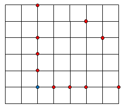

Alice walks on a lattice grid. She can step from one lattice point A(a,b) to another B(a+x,b+y) providing distance AB=x2+y2 is a Fibonacci number {1,2,3,5,8,13,…} and x≥0, y≥0.
In the lattice grid below Alice can step from the blue point to any of the red points.

Let F(W,H) be the number of paths Alice can take from (0,0) to (W,H). You are given F(3,4)=278 and F(10,10)=215846462.
Find F(10000,10000)mod1000000007.